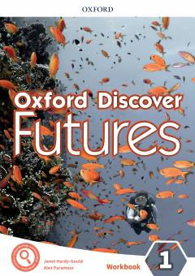

ODIngliz tilini o'rganish uchun mo'ljallangan amaliy ish daftari va mashqlar to'plami.
Ushbu kitob o'quvchilar uchun ingliz tilini o'rganish va grammatik hamda leksik ko'nikmalarni mustahkamlashga mo'ljallangan ish daftari hisoblanadi. Unda turli mavzular bo'yicha qiziqarli matnlar, mashqlar va imtihonga tayyorgarlik materiallari mavjud. Materiallar o'quvchilarning tahliliy fikrlashini va muloqot qobiliyatini rivojlantirishga qaratilgan.